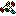

| pop2owa |
| GUID | Name |
|---|---|
| {00020430-0000-0000-C000-000000000046} | OLE Automation |
| {26E1B82A-01EF-4120-BE7D-04FCA41E7E74} | VB-friendly NT Service Unicode API Functions |
| {F5078F18-C551-11D3-89B9-0000F81FE221} | Microsoft XML, v3.0 |
|  modGlobal | Store all public variables, constants and common functions. |
| modSocketMaster | This module contains API declarations and helper functions for the CSocketMaster class |
| NTService | NT Service module. |
| frmMain | Main form, with the program options. |
| frmSysTray | frmSysTray. Steve McMahon Original version based on code supplied from Ben Baird: Setting an icon in the taskbars system tray. |
| clsConfig | |
| clsOWA | WebDav code to comunicate with MS Exchange server |
| clsPOP3 | Class to emulate a POP3 server. Its a proxy between e-mail client and OWA class. |
| clsProfile | |
| clsXMLRequest | Encapsulate Msxml2 objects |
| CSocketMaster |
Winsock api implementation class. Requires modSocketMaster.bas code module. |